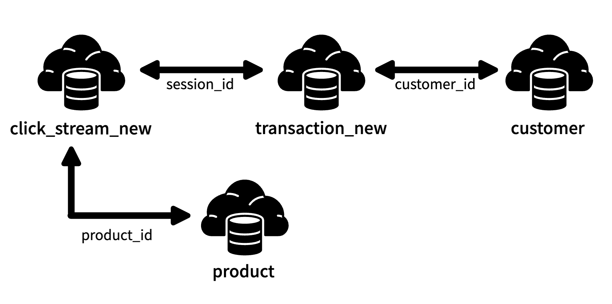
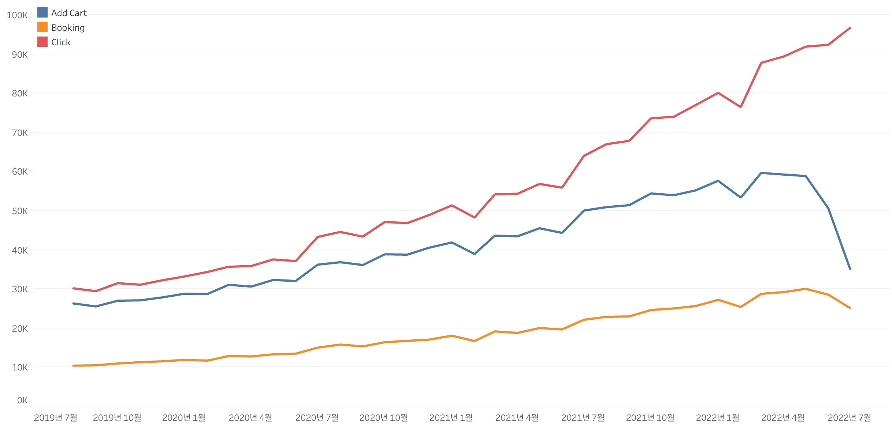
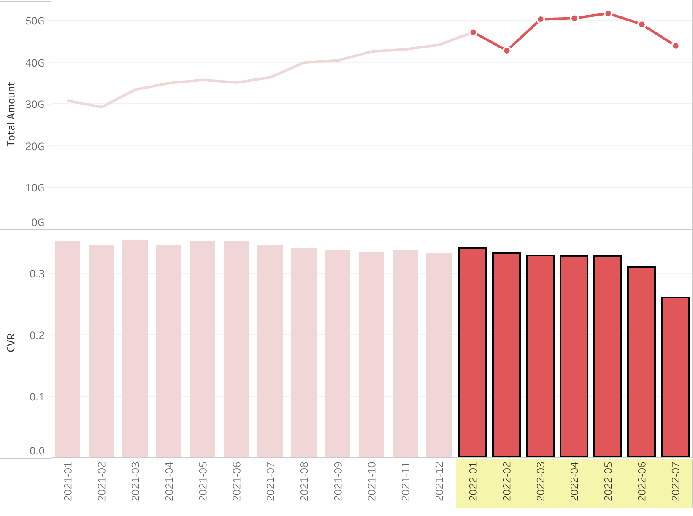
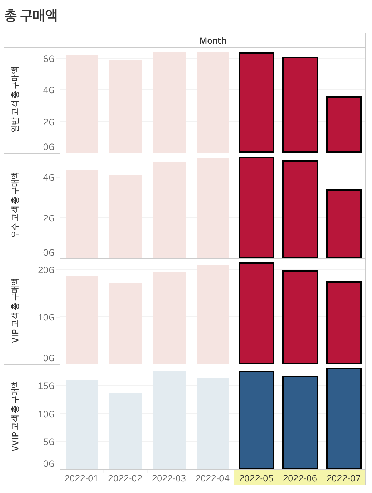
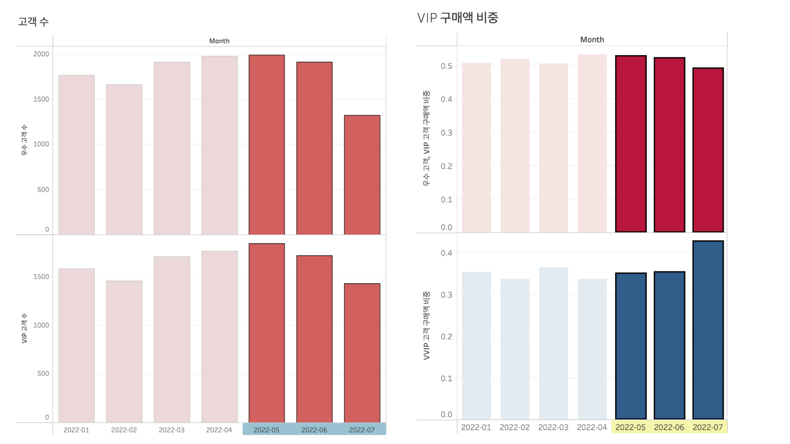
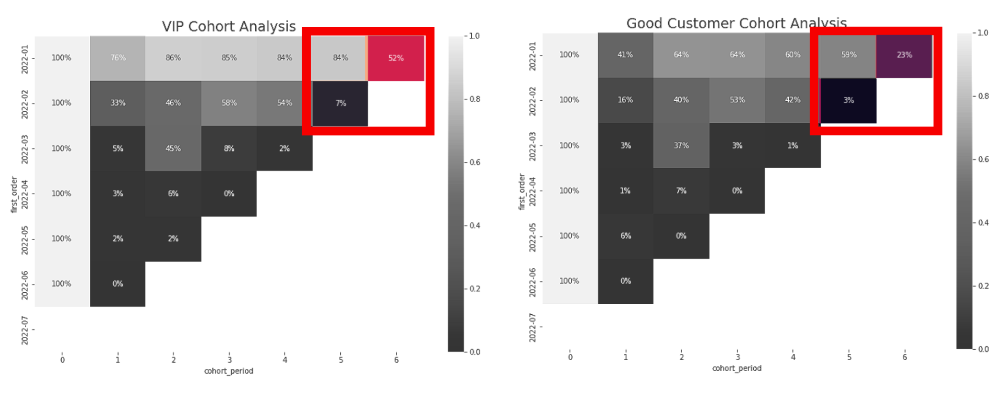
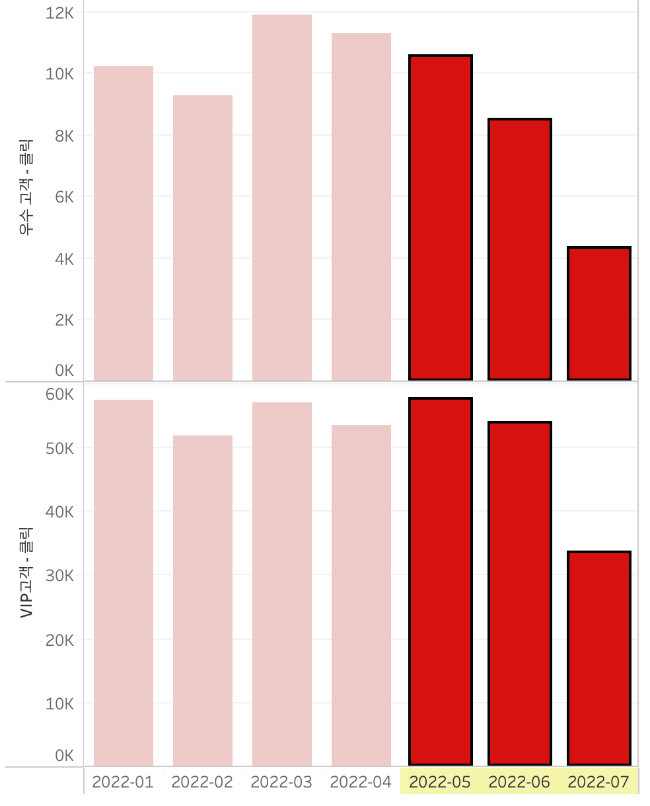
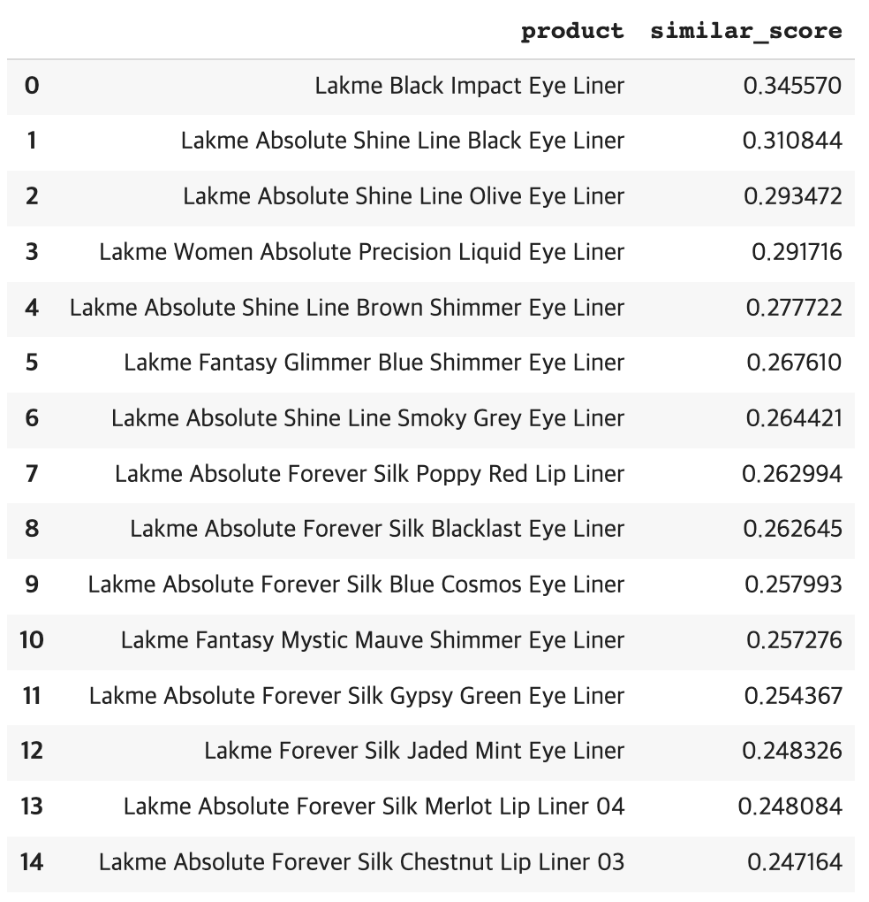

이커머스 구매전환율을 높이기 위한 고객 분석
INTRO
DATA / 문제정의 / 프로젝트 목표 / 가설 / 개념정리
데이터 분석
EDA / 데이터 분석 / 데이터 분석 결과
결론
결론 / 프로젝트 회고 / 참고 자료
프로젝트 분석 코드
INTRO
1. DATA
💡 데이터
- Kaggle에 존재하는 Fashion Campus 데이터를 사용했습니다.(Link)

💡 데이터 설명
- click_stream_new : 사이트 내의 고객 활동 데이터
- customer : 고객 데이터
- product : 상품 데이터
- transaction_new : 거래 데이터
💡 데이터 선정 이유
- 데이터 내에 사용자 행동(클릭, 장바구니 추가, 예약 등)이 존재하여 로그 분석이 가능할 것이라 추측했습니다.
- 2016년부터 2022년까지 7년 간의 데이터가 존재하기 때문에 패턴 발견에 용이할 것이라 추측했습니다.
- 소비자들의 구매 데이터가 존재하기 때문에 코호트 분석이 가능할 것이라 추측했습니다.
2. 문제정의
💡 문제 상황

- 2019년 7월부터 2022년 7월까지의 *클릭, 장바구니 추가, 결제에 대한 데이터를 확인해본 결과, 클릭은 꾸준히 증가하지만 장바구니 추가와 결제는 2022년 5월부터 2022년 7월까지 감소하는 경향이 있다는 것을 확인할 수 있습니다.
* 데이터에 대한 설명이 부족하여 클릭을 고객 활성화 수치로 가정하여 분석을 진행했습니다.

- 위 그래프를 보면 2022년 5~7월의 매출(위)과 구매전환율(아래)이 감소하는 모습을 확인할 수 있습니다.
💡 문제 정의
- 클릭은 증가하지만, 결제는 감소하여 구매전환율과 매출이 감소하였습니다.
- 구매전환율이 감소하는 상황이 지속된다면 고객을 유치하기 위해 기존에 지불하던 마케팅 비용보다 더 많은 마케팅 비용을 지불해야 하며, 이로 인해 기업의 수익이 감소하게 됩니다.
3. 프로젝트 목표
💡 프로젝트 목표
- 고객의 구매전환율을 높이기 위해 고객에 대한 분석을 진행하고 구매전환을 감소시키는 원인을 해결할 수 있는 액션플랜을 제안합니다.
💡 프로젝트 기대 효과
- 고객 분석을 통해 구매전환을 감소시키는 원인을 발견하여 해결함으로써 기업을 다음과 같은 기대효과를 얻을 수 있습니다.
- 각 고객 등급에 맞는 혜택과 개인화된 서비스를 제공함으로써 고객의 충성도를 높일 수 있고, 장기적인 이익을 얻을 수 있습니다.
- 액션플랜을 통해 비즈니스 모델의 다각화를 이룰 수 있어 수익을 창출할 수 있으며, 새로운 고객을 유치할 수 있습니다.
4. 가설
- 2022년 5~7월 VIP 고객의 구매가 감소하였기 때문에 구매전환율 하락이 발생했을 것입니다 (전체 중 구매액 상위 20%의 고객을 VIP로 지정합니다).
- VIP 고객은 2021년 구매 금액을 기준으로 지정합니다.
- VIP 고객의 구매액을 2022년 월별로 비교합니다.
- 2022년 1~4월에 비해 5~7월에 VIP 고객의 수와 활동이 감소하였을 것입니다.
5. 개념정리
💡 파레토 법칙(80 : 20 법칙)
- 80%의 결과가 20%의 원인에 의해 발생한다는 법칙
- 파레토 법칙을 매출과 상관지어 보면 전체 매출의 80%는 전체 중 20%의 고객에 의해 발생
💡 코호트 분석
- 사용자 행동을 그룹으로 나눠 지표별로 수치화한 뒤 분석하는 기법
💡 리텐션
- 한번 획득한 유저들이 서비스를 이탈하지 않고 계속 서비스를 이용하는 것
- 리텐션이 낮다는 것은 이탈하는 유저가 많은 것을 의미
💡 AARRR
- Acquisition(획득), Activation(활성화), Retention(유지), Referral(추천), Revenue(수익)의 앞 글자를 따서 붙여진 이름으로 추상적인 고객 여정을 다섯 단계로 구분한 것
데이터 분석
1. EDA
💡 데이터 전처리
- 거래 데이터 분석을 위해 Transaction, Customer, Product 데이터 프레임을 병합합니다.
- 프로젝트 목표와는 상관없는 불필요한 column을 삭제합니다.
- Click stream, Transaction 데이터 프레임에서 결측치를 'None', '0' 값으로 대체합니다.
- 월별 비교를 위해 거래 날짜를 'YYYY-MM-DD' 또는 'YYYY-MM'의 형태로 변환합니다.
- 문자열로 이루어진 column을 카테고리 구조로 변경하여 데이터 프레임을 경량화합니다.
- Click stream, Transaction 데이터 프레임을 각각 event_day, created_at 기준으로 재정렬합니다.
💡 고객 분류 및 리텐션 계산
- 고객 분류를 위해 파레토 법칙을 이용하였으며, 구매액 기준 상위 20%의 고객을 우수 고객으로, 상위 10%를 VIP 고객, 상위 1%를 VVIP 고객으로 선정하였습니다.
- 리텐션 계산
- 2022년 1월에 첫 구매를 한 고객의 수를 구합니다.
- 1번의 고객군 중 2월에 구매를 진행한 고객의 수를 구합니다.
- 2번의 과정을 통해 3~7월에 구매를 진행한 고객의 수를 구합니다.
- 2~7월에 구매를 한 고객의 수를 1월에 구매한 고객의 수로 나누어 리텐션을 계산합니다.
- 1~4번의 과정을 2~7월에 첫 구매를 한 고객에 대해서도 반복합니다.
2. 데이터 분석
💡 2022년 월별 VVIP, VIP, 우수, 일반 고객 비교

- 각 고객 등급의 2022년 5월과 7월의 총 구매액을 비교하면 다음과 같습니다.
- 일반 고객 약 44% 감소
- 우수 고객 약 23% 감소
- VIP 고객 약 19% 감소
- VVIP 고객 약 3% 증가
- VIP 고객, 우수 고객, 일반 고객의 총 구매액이 감소한 사실을 확인할 수 있습니다.
- 왼쪽 그래프를 보면 VIP 고객과 우수 고객의 수가 감소한 사실을 확인할 수 있습니다.
- VIP 고객 : 1,843명 -> 1,434명(약 22% 감소)
- 우수 고객 : 1,989명 -> 1,325명(약 33% 감소)

💡 2022년 월별 VIP, 우수 고객 리텐션 비교

- VIP 고객과 우수 고객에 대한 코호트 분석을 보면 *1월과 2월에 구매를 진행한 고객들의 리텐션이 7월에 크게 감소한 모습을 확인할 수 있다.
- VIP 고객 : 1월, 84% -> 52%(32% 감소) / 2월, 54% -> 7%(47% 감소)
- 우수 고객 : 1월, 59% -> 23%(36% 감소) / 2월, 42% -> 3%(39r 감소)
* 1월과 2월에 첫 구매를 한 고객이 전체 구매의 90% 이상을 차지.
💡 2022년 월별 VIP, 우수 고객 활성화(클릭) 비교

- VIP, 우수 고객의 활동 로그를 살펴보면 클릭이 7월에 감소하는 것을 확인할 수 있습니다. 이를 통해 VIP, 우수 고객들의 활성화 감소가 리텐션 하락과 연관이 있다고 볼 수 있습니다.
- VIP 고객과 우수 고객의 프로모션 이용 비율은 1월부터 7월까지 변동이 없었다는 것을 확인할 수 있었습니다. 그렇기 때문에 프로모션이 VIP, 우수 고객의 활성화가 감소하는 원인이 아니라는 것을 알 수 있었습니다.
3. 데이터 분석 결과
- 고객 분류를 통해 위에서 정의한 가설을 확인할 수 있었습니다.
가설 1)
VIP 고객의 구매가 감소하여 구매전환율이 감소했을 것입니다.
⇒ 데이터를 통해 VIP 고객과 우수 고객의 구매액이 각각 약 23%, 19% 감소한 모습을 확인할 수 있었습니다. 이를 통해 VIP 고객과 우수 고객의 구매액 감소가 구매전환율과 연관은 있다고 할 수 있지만, 구매의 감소가 구매전환율의 감소 원인이라고 확정하기는 어렵습니다.
가설 2)
VIP 고객의 수와 활동이 감소했을 것입니다.
⇒ VIP 고객과 우수 고객의 수가 각각 약 22%, 33% 감소하였고, 고객 리텐션을 통해 7월에 고객의 활동이 감소하였다는 것을 확인했습니다. 이를 통해 VIP 고객과 우수 고객의 활성화와 유지의 감소가 있다는 사실을 발견했습니다.
- 고객 활성화는 AARRR의 두번째 단계로 고객 활성화가 감소한다면 마지막 단계인 수익도 감소를 하게 되기 때문에 문제가 될 수 있습니다.
- 데이터 상으로는 VIP, 우수 고객의 활성화 감소의 원인을 파악하기 어렵습니다.
- 그렇기 때문에 활성화 감소 원인이 외부에 존재한다고 추측할 수 있으며, 생각해볼 수 있는 외부의 요인은 다음과 같습니다.
- 경쟁사의 성장으로 인해 고객이 경젱사로 유출될 수 있습니다.
- 중고거래가 증가하여 새로운 상품을 구매하는 소비자 활동의 감소가 발생할 수 있습니다.
- 소비자가 원하는 제품을 찾기 어렵거나 원하는 제품이 존재하지 않을 수 있습니다.
결론
1. 결론
- 데이터 분석 결과, 최근(2022년 5~7월) VIP, 우수 고객의 활동과 구매전환율이 감소하였고 이에 대한 원인은 데이터 상에서 파악하기 어려워 외부에 존재하는 것으로 추측할 수 있습니다.
- 서비스 활성화 감소에 대한 외부 요인에 대해 다음과 같은 액션플랜을 제안할 수 있습니다.
- 경쟁사의 성장으로 인해 고객이 외부로 유출된 경우
- VVIP, VIP, 우수 고객을 대상으로 단계별 프리미엄 혜택을 제공 하여 자사 서비스를 이용했던 고객들을 재유입할 것을 기대할 수 있습니다.
- 중고거래가 증가하여 새로운 상품을 구매하는 고객이 감소하는 경우
- 사이트 내에 중고거래에 대한 정보를 얻을 수 있는 페이지르 생성 한다면 중고거래를 원하는 고객들의 활성화를 기대할 수 있습니다.
- 장기적으로는 중고거래 시장으로 신사업(안전거래 수수료, 페이지 내 광고 상품 등)을 확장 할 수 있습니다.
- 소비자가 원하는 제품을 찾기 어렵거나 원하는 제품이 존재하지 않는 경우
- 개인화된 상품 추천 서비스와 개인화 메시징 을 통해 원하는 상품을 쉽게 찾을 수 있도록 도와줄 수 있습니다.
- 예시 ) "Lakme Insta-Liner"와 유사한 추천 상품
- 새로운 상품을 런칭하여 구매를 촉진시킬 수 있습니다.

2. 프로젝트 회고
💡 긍정적인 부분
- 데이터를 통해 문제를 발견하고 문제의 원인을 찾기 위해 고객 분류를 진행하여 리텐션을 확인하여 고객 활성화와 유지와 관련된 인사이트를 얻을 수 있었습니다.
- AARRR의 두 번째, 세 번째 단계인 activation과 retention을 감소시키는 요인에 대해 고민하고 이를 해결할 수 있는 다양한 액션플랜을 제안할 수 있었습니다.
💡 한계점
- Kaggle에서 주어진 데이터이기 때문에 데이터 외부 상황에 대한 분석이 어려웠습니다.
- 로그 데이터 내에 session에 대한 기준과 이벤트가 발생한 페이지에 대한 정보를 확인하기 어려워 event_name 내의 활동을 임의로 가정하여 분석을 진행하였습니다.
- 액션플랜 시행에 대한 결과를 확인하기가 어려웠습니다.
💡 개선 사항
- 체류시간을 기준으로 세션을 새로 정의하여 보다 세부적인 퍼널분석이 가능합니다.
- 다양한 방법을 사용하여 상품 추천 서비스를 개선시킬 수 있습니다.
3. 참고자료
- 파레토 법칙(출처 : KDI 경제정보센터 / 링크 )
- 사용자 유지율을 알 수 있는 코호트 분석 이해하기(출처 : beusable 블로그 / 링크 )
- 성장을 위한 필수 지표, 유저 리텐션 향상 전략(출처 : 모바일 히어로즈 / 링크 )
- 고객 여정에 따른 'AARRR' 마케팅 용어 알아보기(출처 : 요즘IT / 링크 )